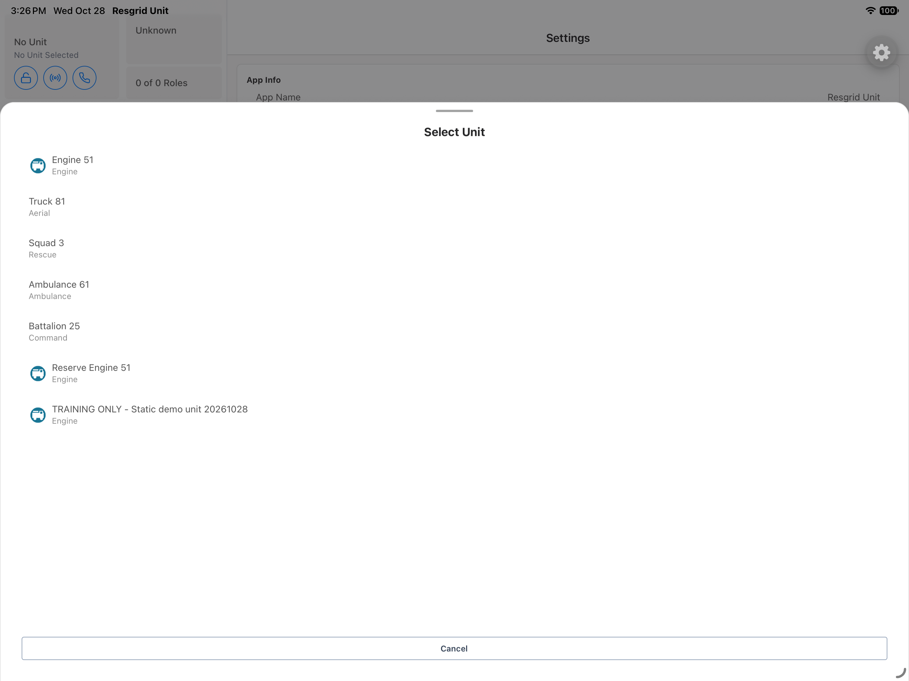
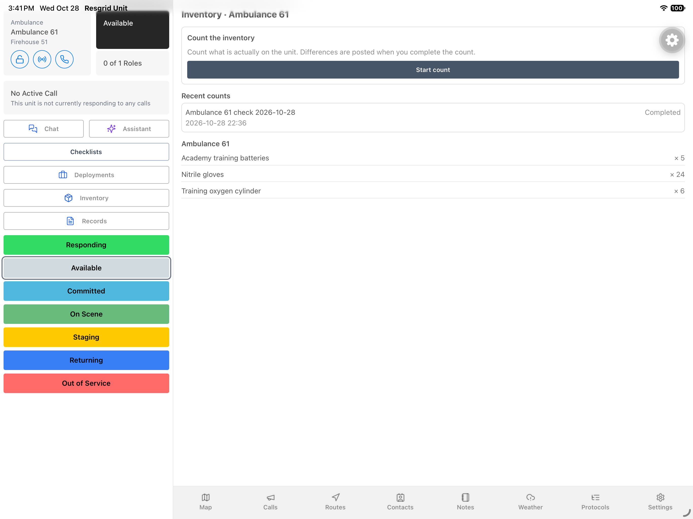
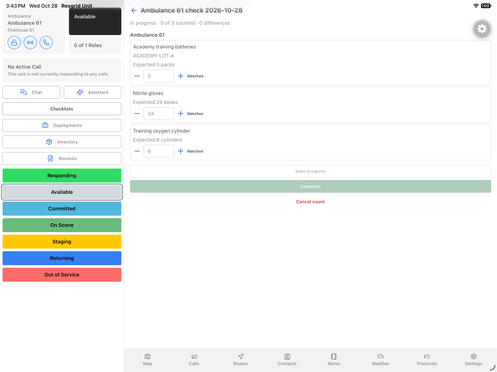
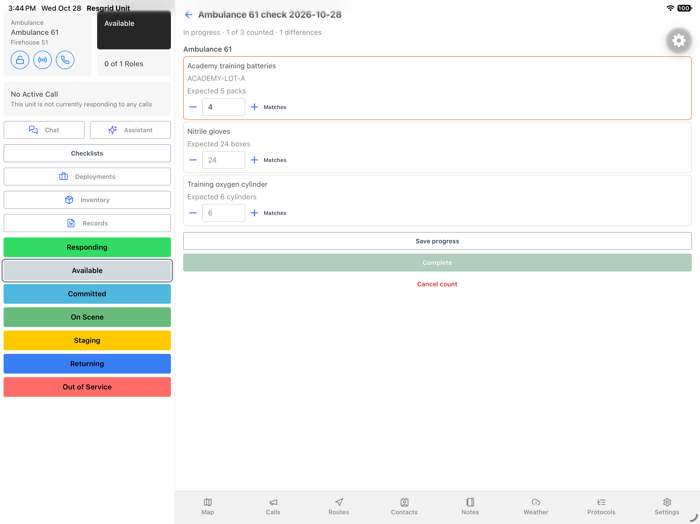
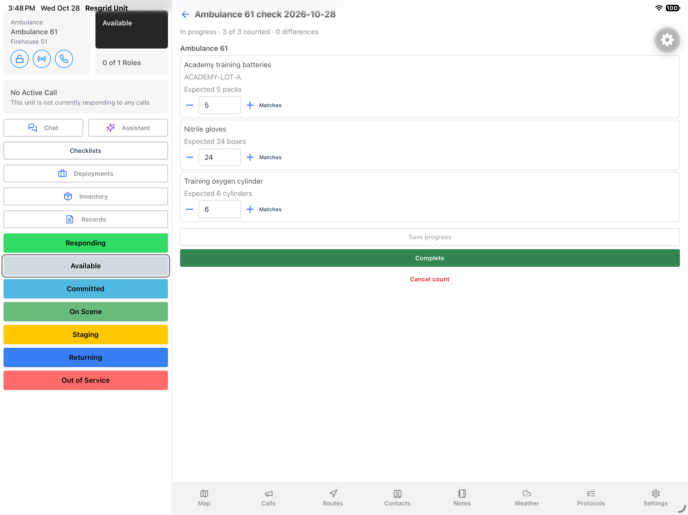
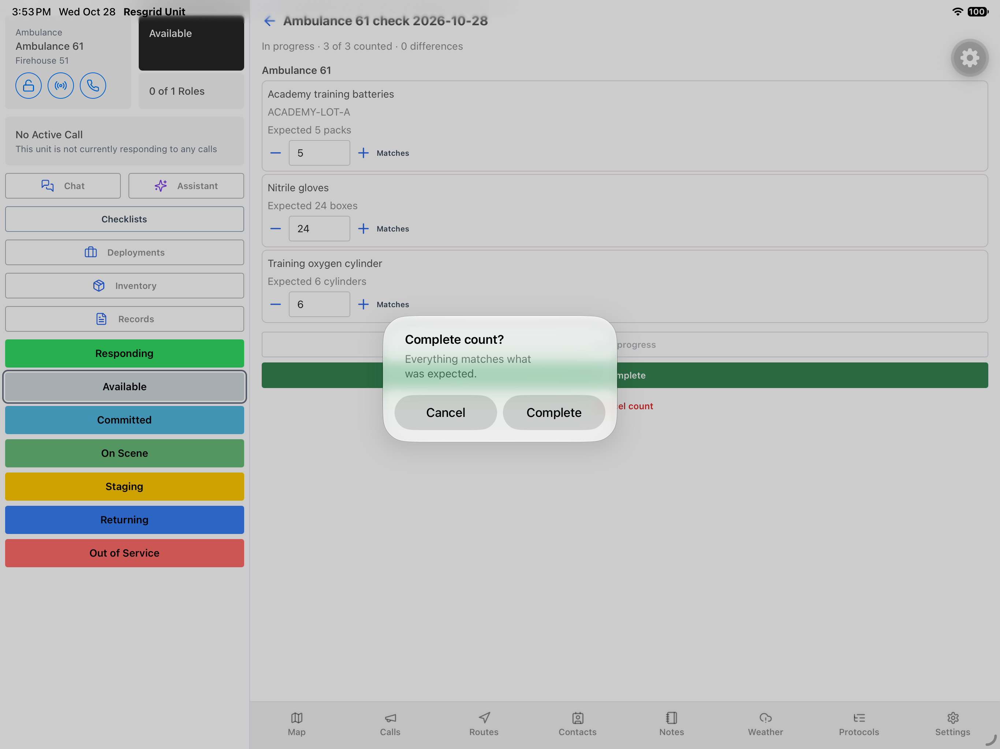

Unit · Video walkthrough
Count unit inventory and verify the completed result
Follow a native iPad inventory count through an unsaved correction, saved observations, confirmation and completed history. The example uses fictional Ambulance 61 stock.
Before you begin
- Sign in to the intended department and server through your normal authorized access.
- The department inventory feature is enabled, your account can count inventory, and the intended unit has assigned stock.
- Select the correct unit and know your department’s counting and shared-device procedures.
- Use an authorized training example; on an operational unit, independently inspect the equipment before entering an observation or choosing Matches.
Chapters
- Select the unit you are checking
- Review the current inventory
- Start one new count
- Read expected values before observations
- Demonstrate an unsaved variance
- Correct the observation with plus
- Record matching quantities
- Save progress without completing
- Choose the correct history entry
- Verify the saved count on reopen
- Review the genuine native confirmation
- Verify completion and current stock
Watch the walkthrough
Step 1
Select the unit you are checking
From Settings, open Active Unit and choose the apparatus whose inventory you intend to check. Select Unit lists the available vehicles; this fictional fire and EMS example uses Ambulance 61. Read the selected unit name again in the sidebar before opening Inventory. Selecting a unit establishes the workspace for your count; it does not demonstrate a status change or a crew assignment.



Practice
Select the intended training unit and confirm its name before opening its stock workspace.
Step 2
Review the current inventory
In Inventory, the heading identifies Ambulance 61. The current list shows five training batteries, twenty four nitrile gloves, and six training oxygen cylinders. Recent counts appears above that equipment list. These are fictional software quantities. On an operational vehicle, first identify the correct supplies and actually inspect them; the displayed balance is a reference for comparison, not evidence that somebody has physically counted the equipment.
Practice
Compare the displayed stock list with an independent practice count of the assigned equipment.
Step 3
Start one new count
On the Inventory screen, choose Start count once. Unit opens a new count for the selected unit and gives it a name containing the unit and date. The new record starts In progress, with zero of three counted. An older completed count remains in history. This walkthrough follows the new record throughout; it does not create another count each time the screen is reopened.

Practice
Start one authorized training count and distinguish it from an older completed record.
Step 4
Read expected values before observations
On the count screen, read Expected beneath each item. The light gray five, twenty four, and six inside the fields are placeholders at this stage. They are not entered observations: the header still says zero of three counted. Complete is unavailable until every line has an observation. Check that header along with the fields, so a screen showing zero differences is not mistaken for a finished inspection.
Practice
Explain why expected placeholders and zero differences do not mean that all items have been counted.
Step 5
Demonstrate an unsaved variance
Beside the battery field, tap the minus control once. In this software exercise, that records four against an expected five. The battery row gains an orange outline, and the header shows one of three counted with one difference. This deliberate practice entry is still unsaved. We do not save or complete the incorrect quantity; the next step corrects it before any stock adjustment could be posted.

Practice
Identify the variance and the counted total without saving the deliberately incorrect practice value.
Step 6
Correct the observation with plus
Use the plus control beside the batteries to change four back to five. The orange outline clears, and the header returns to zero differences. It still shows only one of three counted because the glove and oxygen observations have not been entered. This distinction matters: matching one item does not complete the rest of the count. Review both the observation and the progress total after a correction.
Practice
Correct the battery observation, then identify which two lines still need observations.
Step 7
Record matching quantities
For the fictional glove and oxygen quantities, choose Matches on each corresponding row. Those controls record the expected twenty four and six as observations. In service, use Matches only after you have actually checked that the equipment agrees with the expected balance. Here the fields now contain five, twenty four, and six, and the header shows three of three counted with zero differences.
Practice
Use each matching control only after an independent check, and verify all three observations and the progress header.
Step 8
Save progress without completing
On the count screen, choose Save progress. The record remains In progress; saving observations does not itself finalize the count. The screen still shows the observations, and there is no pictured success banner to rely on. Verify persistence through the ordinary history and reopen sequence next. Keep completion as a separate decision after reviewing the unit, every observation, and the remaining differences.

Practice
Save the matching draft observations and explain how that differs from completing the count.
Step 9
Choose the correct history entry
Use the back arrow to return to Inventory. Recent counts now shows two entries with the same unit and date in their titles. The newer record is In progress, while the earlier record is Completed. Compare the displayed status and timestamp rather than choosing by title alone. Open the newer In progress entry to continue the same count you just saved, while leaving the older completed record unchanged.
Practice
Identify the newer in-progress record using its status and timestamp, then reopen that record.
Step 10
Verify the saved count on reopen
The reopened record still shows In progress, three of three counted, and zero differences. Read the observations again: five batteries, twenty four gloves, and six oxygen cylinders. This is the saved count from the preceding steps. Reopening provides a useful review before finalization, particularly on a shared device where another crew may later read the record. Confirm the selected unit and each line before choosing Complete.
Practice
Compare the reopened observations with the saved draft and resolve any mismatch before finalization.
Step 11
Review the genuine native confirmation
On this reviewed count screen, choose Complete. The actual iPad confirmation asks Complete count and states that everything matches what was expected. It presents Cancel and Complete as separate choices. Review that message before deciding. For this authorized zero difference training example, choose Complete in the confirmation. That button submits the operation; the next application screen must establish whether the count actually completed or returned an error.

Practice
Read the native confirmation and distinguish opening the dialog from successfully completing a count.
Step 12
Verify completion and current stock
The result shows Completed and Count completed, with the saved quantities disabled. Inventory history now shows both records Completed, and stock remains five, twenty four, and six. Reopening the newer count still shows the completed result. The same review fits community care kits, search and rescue caches, security patrol supplies, wildland equipment, and industrial protective equipment. Each team should count what its own assigned unit actually carries and verify the final record.
Practice
Verify completed history and unchanged stock, then adapt the same review to the supplies used by your team.
Examples for your department
- Fire / EMS
- An ambulance crew checks its assigned consumables before service.
- Community response
- A mobile care team checks the supplies in its vehicle kits.
- Search and rescue
- A search team reviews cache supplies carried by its assigned response vehicle.
- Security
- A patrol team checks vehicle supplies at a crew handover.
- Wildland
- A wildland crew checks consumables and protective supplies on its assigned unit.
- Industrial
- An industrial response team checks unit protective equipment and consumables.
Transcript
Download transcriptRead the complete transcript
Count unit inventory and verify the completed result Audience: Unit operators, apparatus crews, equipment coordinators and supervisors. Select the unit you are checking From Settings, open Active Unit and choose the apparatus whose inventory you intend to check. Select Unit lists the available vehicles; this fictional fire and EMS example uses Ambulance 61. Read the selected unit name again in the sidebar before opening Inventory. Selecting a unit establishes the workspace for your count; it does not demonstrate a status change or a crew assignment. Practice: Select the intended training unit and confirm its name before opening its stock workspace. Review the current inventory In Inventory, the heading identifies Ambulance 61. The current list shows five training batteries, twenty four nitrile gloves, and six training oxygen cylinders. Recent counts appears above that equipment list. These are fictional software quantities. On an operational vehicle, first identify the correct supplies and actually inspect them; the displayed balance is a reference for comparison, not evidence that somebody has physically counted the equipment. Practice: Compare the displayed stock list with an independent practice count of the assigned equipment. Start one new count On the Inventory screen, choose Start count once. Unit opens a new count for the selected unit and gives it a name containing the unit and date. The new record starts In progress, with zero of three counted. An older completed count remains in history. This walkthrough follows the new record throughout; it does not create another count each time the screen is reopened. Practice: Start one authorized training count and distinguish it from an older completed record. Read expected values before observations On the count screen, read Expected beneath each item. The light gray five, twenty four, and six inside the fields are placeholders at this stage. They are not entered observations: the header still says zero of three counted. Complete is unavailable until every line has an observation. Check that header along with the fields, so a screen showing zero differences is not mistaken for a finished inspection. Practice: Explain why expected placeholders and zero differences do not mean that all items have been counted. Demonstrate an unsaved variance Beside the battery field, tap the minus control once. In this software exercise, that records four against an expected five. The battery row gains an orange outline, and the header shows one of three counted with one difference. This deliberate practice entry is still unsaved. We do not save or complete the incorrect quantity; the next step corrects it before any stock adjustment could be posted. Practice: Identify the variance and the counted total without saving the deliberately incorrect practice value. Correct the observation with plus Use the plus control beside the batteries to change four back to five. The orange outline clears, and the header returns to zero differences. It still shows only one of three counted because the glove and oxygen observations have not been entered. This distinction matters: matching one item does not complete the rest of the count. Review both the observation and the progress total after a correction. Practice: Correct the battery observation, then identify which two lines still need observations. Record matching quantities For the fictional glove and oxygen quantities, choose Matches on each corresponding row. Those controls record the expected twenty four and six as observations. In service, use Matches only after you have actually checked that the equipment agrees with the expected balance. Here the fields now contain five, twenty four, and six, and the header shows three of three counted with zero differences. Practice: Use each matching control only after an independent check, and verify all three observations and the progress header. Save progress without completing On the count screen, choose Save progress. The record remains In progress; saving observations does not itself finalize the count. The screen still shows the observations, and there is no pictured success banner to rely on. Verify persistence through the ordinary history and reopen sequence next. Keep completion as a separate decision after reviewing the unit, every observation, and the remaining differences. Practice: Save the matching draft observations and explain how that differs from completing the count. Choose the correct history entry Use the back arrow to return to Inventory. Recent counts now shows two entries with the same unit and date in their titles. The newer record is In progress, while the earlier record is Completed. Compare the displayed status and timestamp rather than choosing by title alone. Open the newer In progress entry to continue the same count you just saved, while leaving the older completed record unchanged. Practice: Identify the newer in-progress record using its status and timestamp, then reopen that record. Verify the saved count on reopen The reopened record still shows In progress, three of three counted, and zero differences. Read the observations again: five batteries, twenty four gloves, and six oxygen cylinders. This is the saved count from the preceding steps. Reopening provides a useful review before finalization, particularly on a shared device where another crew may later read the record. Confirm the selected unit and each line before choosing Complete. Practice: Compare the reopened observations with the saved draft and resolve any mismatch before finalization. Review the genuine native confirmation On this reviewed count screen, choose Complete. The actual iPad confirmation asks Complete count and states that everything matches what was expected. It presents Cancel and Complete as separate choices. Review that message before deciding. For this authorized zero difference training example, choose Complete in the confirmation. That button submits the operation; the next application screen must establish whether the count actually completed or returned an error. Practice: Read the native confirmation and distinguish opening the dialog from successfully completing a count. Verify completion and current stock The result shows Completed and Count completed, with the saved quantities disabled. Inventory history now shows both records Completed, and stock remains five, twenty four, and six. Reopening the newer count still shows the completed result. The same review fits community care kits, search and rescue caches, security patrol supplies, wildland equipment, and industrial protective equipment. Each team should count what its own assigned unit actually carries and verify the final record. Practice: Verify completed history and unchanged stock, then adapt the same review to the supplies used by your team. Examples for your department Fire / EMS: An ambulance crew checks its assigned consumables before service. Community response: A mobile care team checks the supplies in its vehicle kits. Search and rescue: A search team reviews cache supplies carried by its assigned response vehicle. Security: A patrol team checks vehicle supplies at a crew handover. Wildland: A wildland crew checks consumables and protective supplies on its assigned unit. Industrial: An industrial response team checks unit protective equipment and consumables.